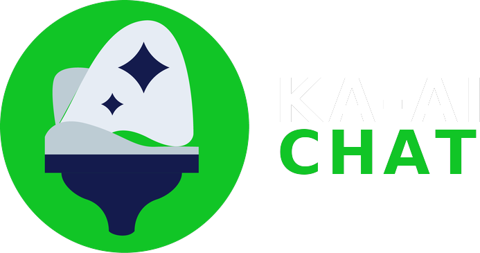

Welcome to KA-AI Chat
Ask anything about KA philosophy, surgical technique, KA-optimized implant design, outcomes and clinical evidence.

Ask anything about KA philosophy, surgical technique, KA-optimized implant design, outcomes and clinical evidence.